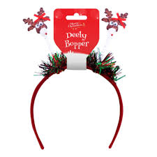

Deely-Boppers are for everyone!
The feelings that are inspired when wearing a Deely-Bopper are powerful. Be sure to share your excitement by using Deely-Boppers:
- For yourself
- With family
- With friends
- With your pets
- Among acquaintances
Never feel like just another face in the crowd again, be the center of the fun!
Show off for Christmas

Get yourself and your family ready for the holiday season. Deely-Boppers are the perfect display of your cheer. With these Deely-Boppers no one will question whether you're in the holiday spirit ever again.
Show off your favourite friend
Your pet will look and feel like part of the family when you get them there own Deely-Bopper. Don't let them miss out on all the fun!